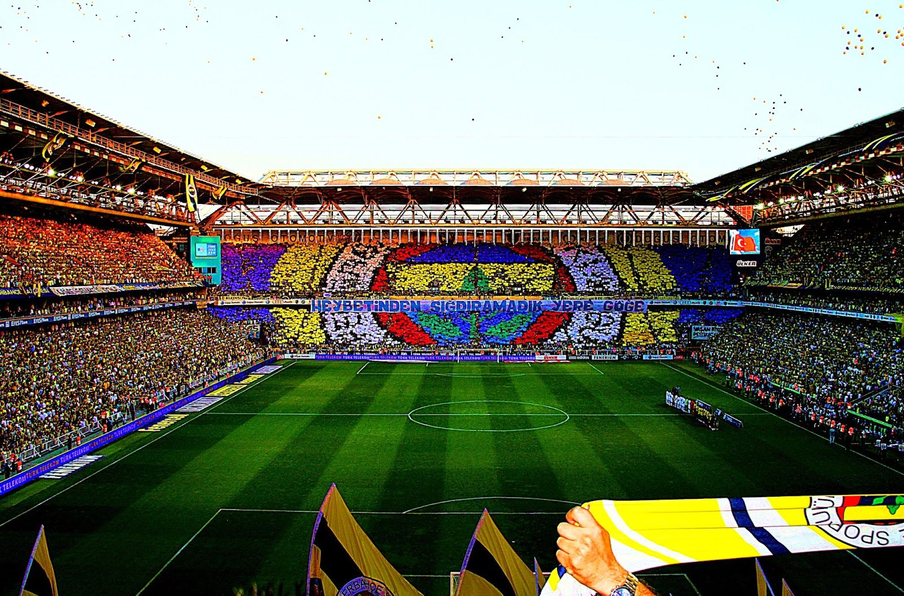

Merhaba,
Ben Muhammed Kerem Doğmuş, Fenerbahçeliyim, 16 yaşındayım ve İstanbul'da yaşıyorum. Hayata olan tutkum ve ilgi alanlarım doğrultusunda sürekli olarak kendimi geliştirmeye
çalışan bir bireyim. Özellikle film ve dizi izlemeye olan düşkünlüğüm, beni hem eğlenceli hem de düşündürücü dünyalara götürüyor. Her türden film ve dizi izleyerek farklı
kültürleri ve bakış açılarını keşfetmekten büyük keyif alıyorum.
Bilgisayar oyunlarına olan ilgim ise, hem strateji geliştirme hem de problem çözme becerilerimi geliştirmeme olanak tanıyor. Oyun oynarken aldığım zevk ve oyun dünyasında geçirdiğim zaman, beni daha yaratıcı ve analitik düşünmeye teşvik ediyor.
Bu hobilerime ek olarak, kodlama ile ilgilenmek de büyük bir tutkum. Yazılım dillerini öğrenmek ve çeşitli projeler üzerinde çalışmak, hem zihinsel olarak beni meşgul ediyor hem de teknik becerilerimi sürekli olarak geliştirmeme yardımcı oluyor. Bilgisayar oyunlarının arka planında çalışan kodları anlamak ve bu süreçte aktif rol almak, kodlamaya olan ilgimi daha da artırıyor.
Kariyer ve kişisel hayatımda, film ve dizilerden aldığım ilhamı, oyunlardaki stratejileri ve kodlamadaki yaratıcı süreçleri bir araya getirerek, her geçen gün daha iyi bir versiyonumu ortaya koymaya çalışıyorum. Gelecek hedeflerim arasında bu ilgi alanlarımı daha da derinleştirmek ve profesyonel yaşamımda bu tutkulardan aldığım deneyimleri en iyi şekilde kullanmak bulunuyor.
